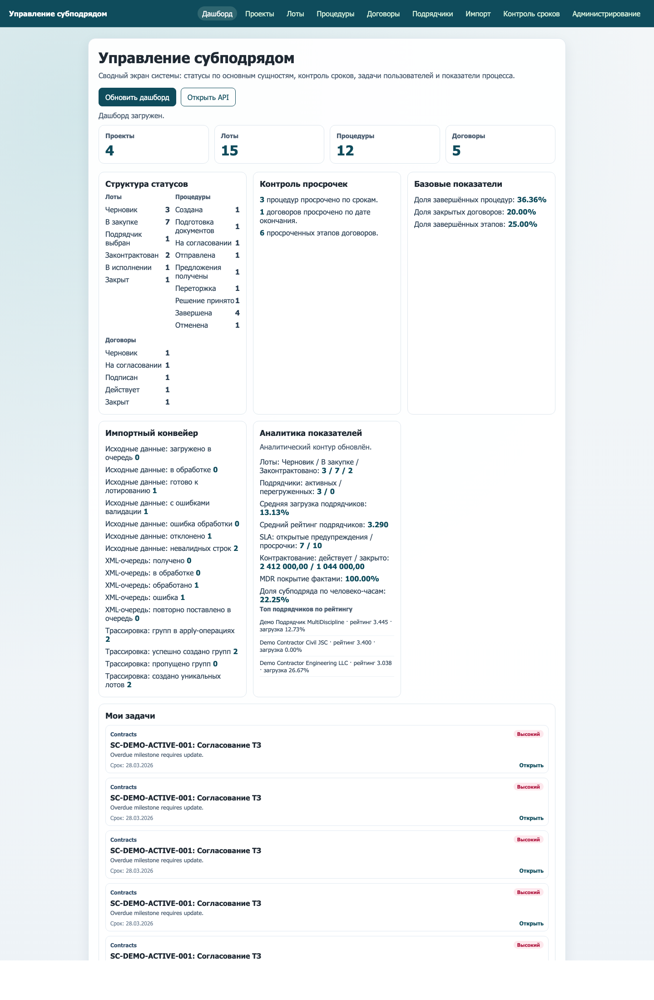
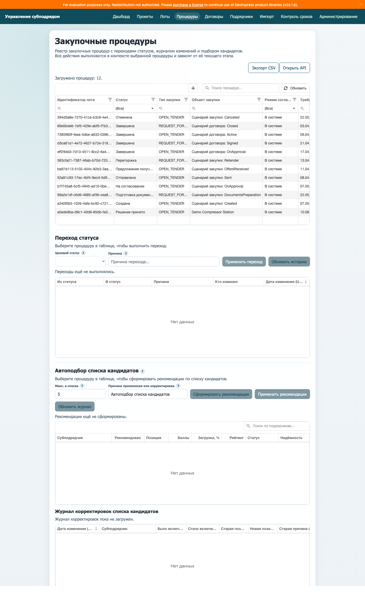
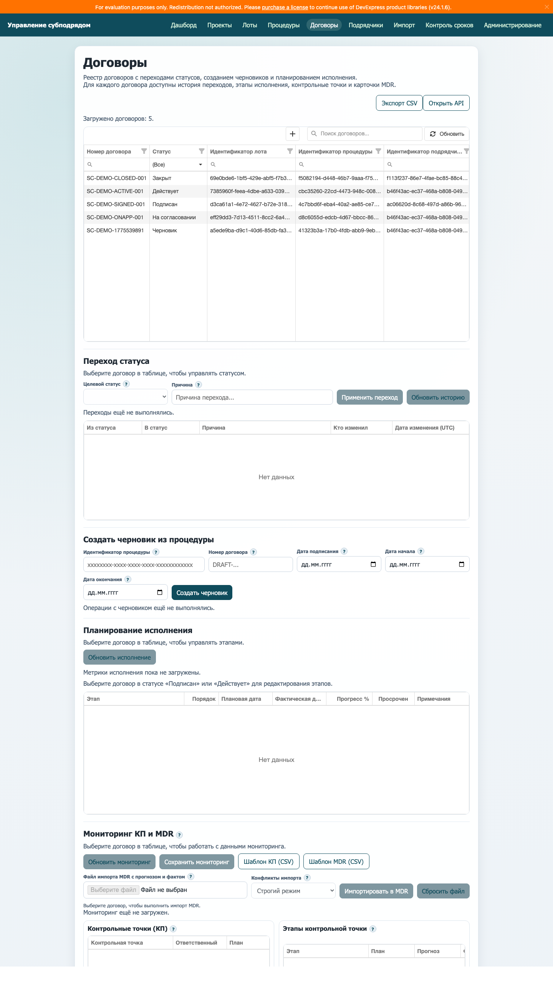
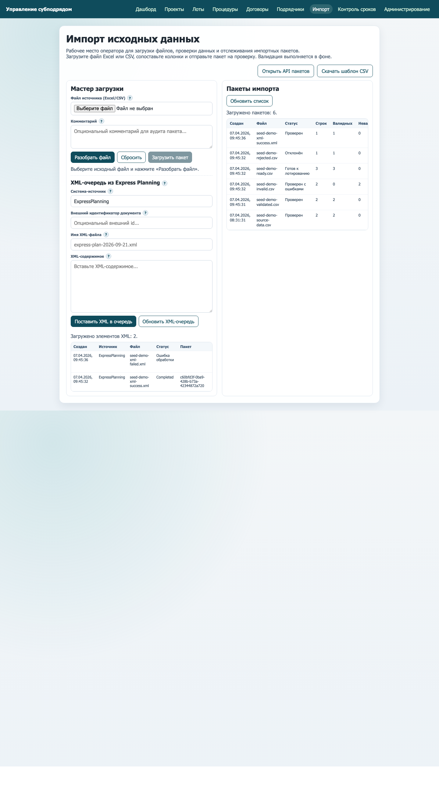
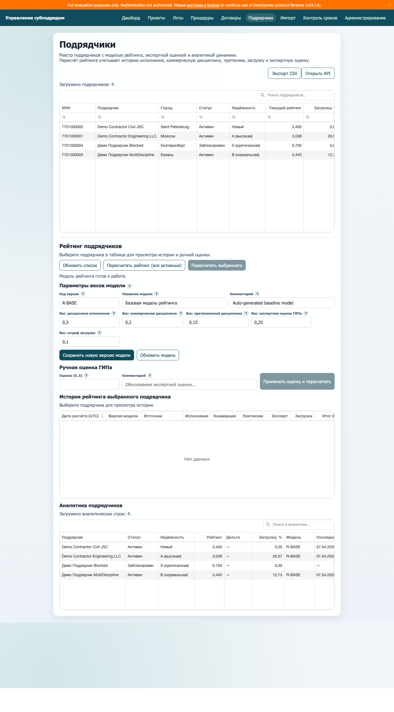

Руководство пользователя
Система «Управление субподрядом»
Назначение системы
Система предназначена для ведения полного цикла работы с субподрядом: от импорта исходных данных и формирования лотов до проведения процедур, выпуска договоров, контроля исполнения и оценки подрядчиков.
В интерфейсе объединены реестры, рабочие формы процессов и аналитические панели, поэтому пользователь может работать в одном окне без переключения между отдельными сервисами.
Навигация по системе
Основная навигация расположена в верхней части экрана. Доступные разделы зависят от роли пользователя, но в типовой конфигурации используются следующие вкладки:
- «Дашборд» — сводная картина по системе.
- «Проекты», «Лоты», «Процедуры», «Договоры» — основные рабочие реестры.
- «Подрядчики» — рейтинг, аналитика и экспертная оценка.
- «Импорт» — загрузка Excel/CSV и XML-документов.
- «Контроль сроков» — правила SLA и нарушения.
- «Администрирование» — роли пользователей и справочники.

Дашборд
Дашборд нужен для ежедневного контроля состояния системы. На нём собраны агрегированные показатели по проектам, лотам, процедурам и договорам.
- Блок «Структура статусов» показывает распределение объектов по текущим этапам.
- Блок «Контроль просрочек» помогает быстро увидеть проблемные точки.
- Блок «Импортный конвейер» отражает состояние загрузки исходных данных и XML-очереди.
- Блок «Мои задачи» показывает назначенные пользователю действия и сроки.
Процедуры и список кандидатов
Раздел «Процедуры» используется для сопровождения закупочных процедур. В верхней части страницы находится реестр, а ниже — рабочие блоки для перехода статуса и формирования рекомендаций по списку кандидатов.
- Поле «Целевой статус» показывает только допустимые переходы для выбранной процедуры.
- Поле «Причина» обязательно при отмене и возврате назад.
- Блок «Автоподбор списка кандидатов» помогает предложить подрядчиков на основе рейтинга, загрузки и квалификации.
- Журнал корректировок сохраняет, кто и почему менял итоговый список.

Договоры и мониторинг исполнения
Раздел «Договоры» покрывает несколько сценариев сразу: ведение реестра, перевод по жизненному циклу, создание черновика из процедуры, управление этапами исполнения и мониторинг по контрольным точкам и карточкам MDR.
- Черновик договора можно создать по идентификатору процедуры.
- Поля дат позволяют заранее задать плановые рамки договора.
- В блоке «Планирование исполнения» ведутся этапы, сроки и процент готовности.
- В блоке «Мониторинг КП и MDR» можно вручную редактировать данные или импортировать Excel/CSV с прогнозом и фактом.

Импорт исходных данных
Раздел «Импорт» предназначен для оператора, который загружает исходные файлы в систему. Здесь можно разобрать файл, сопоставить колонки, загрузить пакет, контролировать ошибки валидации и работать с XML-документами из внешней системы.
- На этапе разбора система показывает предварительный просмотр строк.
- Сопоставление колонок позволяет привести разные шаблоны к системной структуре.
- Для каждого пакета можно посмотреть историю, отчёты по ошибкам и рекомендации по лотированию.
- Блок XML-очереди используется для приёма документов из внешних систем.

Подрядчики и рейтинг
Раздел «Подрядчики» используется для анализа портфеля подрядчиков и настройки рейтинговой модели.
- В верхней таблице отображаются основные данные о подрядчиках, их статус, текущий рейтинг и загрузка.
- Блок «Параметры весов модели» позволяет управлять влиянием факторов на итоговый рейтинг.
- Блок «Ручная оценка» нужен для экспертного мнения ГИПа.
- История и аналитика помогают отследить динамику рейтинга во времени.

Контроль сроков и администрирование
Раздел «Контроль сроков» нужен для сопровождения SLA. В нём настраиваются правила предупреждений по типам закупки и регистрируются нарушения сроков с причиной и комментарием.
Раздел «Администрирование» используют системные администраторы: для поиска пользователей, назначения ролей и управления справочниками.
Типовой порядок работы
- Загрузите исходные данные через раздел «Импорт» и дождитесь успешной проверки пакета.
- Сформируйте или уточните лоты.
- Создайте и проведите закупочную процедуру, при необходимости воспользуйтесь рекомендациями по списку кандидатов.
- После принятия решения создайте черновик договора из процедуры.
- Переведите договор по жизненному циклу и заполните этапы исполнения.
- По мере выполнения работ обновляйте мониторинг КП и MDR, а также следите за контрольными сроками через SLA.
Полезные правила для пользователей
- Если рядом с полем есть значок ?, используйте его как первую подсказку перед изменением значения.
- При возврате объекта на предыдущий статус всегда указывайте причину.
- Перед массовым импортом сначала проверьте небольшой тестовый файл на корректность структуры.
- Если права на раздел или записи отличаются у разных сотрудников, это связано с назначенной ролью.